誰に向けて話すか
- 新車を、できるだけ長く綺麗な状態のまま乗りたい人。話はこの目的に持っていく
- 20〜30万円のコーティングをもう比べている人。金払いがよく、専門的な所はプロに任せたい人
- コーティングをしたことがある人。初めてでも、納得できたらお金を出す人。心に余裕がある人
- 「必要か」の段階は越えて、「どこでやってもらおうか」で迷っている人に話す
- 長く綺麗に乗る目的が無い人（自分で塗る人、その場しのぎで済ませたい人）は見込み客にならない
- 見る人が知りたいのは、どんな人がやっているか、誰がやってくれるか、ちゃんと比べた情報、段取り
- 車が分からない人の第一印象は「高っ、なんでこんな高いんや」「何がそんなにいいんやろ」（50万円の見本を見た村田さん）。この疑問に動画全体で答える
- チャンネルとして大事なこと：専門家なんだと分かってもらう。ディーラーとどう違うのかを伝える。誰から買うかの安心感・信用・信頼感を、BUDDICAの動画よりどんな要素で作るかを考える
どう喋るか
- 普通に喋る。なよなよせず、自信を持ってはきはきと。聞き取りやすい言葉遣いで
- 語尾は全部言い切る。です・ます調。「〜かもしれません」は使わない
- 言い切る前に前置き：「当店ではこういったお客様が多いので、〇〇にならないために、こうしています／皆様にはこうお伝えしています」
- 動画内の言葉遣いから、営業の人の感じが伝わる。言葉遣いに気をつける
- ナレーターは関西弁が強い人なので、言葉遣いに気をつけてもらう。MIYABIの店舗で見本の雰囲気が出せるかは分からない
- 音のいいマイクで録る。見本はボソボソ喋っていてもよく聞こえる
何を言うか
- こだわり、何に気をつけているか、こうやるとこういうメリットがある、を丁寧に話す
- 一つ一つの動作に「こうだから、こういう意識でやっています」を付けて重みを出す
- 専門用語を言いっぱなしにしない。「それがあるから、こうなんです」の「こうなんです」を、目で見て分かる物・言葉・メリットまで言う。これが差別化
- その施工がどんな問題にどう効くのかを言う。お客さんの目線、お客さんが使う言葉で
- 職人には当たり前の所も、知識がない人には「そういう感じでやるんや」になる。当たり前だと思って飛ばさない
- 実際にあったことに、そこに至った経緯をちょいちょい入れる。信頼につながる
- 終わった後の話（保証・気遣い）をちょいちょい入れる。「ここまで気を使ってくれるのか」と思ってもらう
- 見ていて思う疑問に、施工しながら答える
- 新車でも付いている鉄粉、新車なのになぜ磨きが要るか、新車でコーティングする理由とメリット、しないデメリットをちょいちょい言う
- 値段だけが一人歩きしないように、「なぜその値段か」を工程の中で言っておく
どう見せるか
- 段取りを分かりやすくする。段取りが悪いとイラつきやすい。手取り足取り、視聴者第一で
- 工程の頭で「今この工程をやっています」と言う。施工場所の見映えで劣る分、ここで差別化する
- 手間と時間ははしょらない。大変な作業ほど省かない。お客さんは手間代を買っている
- 見本は細かい工程まで本当に全部やっている。ただ、全工程を完璧に出す必要はない。大筋は合わせる。見る人は知識がないので「こんなにやってくれるんだ」と感じてもらう
- 職人の技と細かさが出る所は長めに撮る。どこが細かくなるかは車による
- 施工する人が見られている（コメント：「施工してくれる人がすごい」「手際がよくて見とれる」「お店選びが大事」）。手元と手際を映す
- かっこよさ・店の映えでは勝てない（MIYABIは工場っぽい）。中身の説明と保証で勝つ
- 見本を丸々まねしない。見本にこちらの強みを足す（引いてから足す、でもよい）
コメントで気をつけること
- 高額な施工は、お金持ちへのひがみがコメント欄に出る
- 新車は「もともときれいで違いが分からない」と言われる。だから違いが見える場面を作る（9番）
- 手順が見えると安心される（「預けたので手順が分からなかったが動画で分かった」）
- 手間を見ると値段に納得される（「あの手間を見ると高いのも頷ける」）
- 動画を見て予約した人がいる（「この動画を見て施工すると決めた」）
撮影・文字
- 天気のいい日に撮る。薄暗いと、きらびやかな感じが出ない
- 白飛びに注意（コメント：「白飛びして分かりにくい」「撮影の明るさを考えて」）
- 横長なので、見せたい物を画面の真ん中に置く
- テロップは明朝体。黒背景（透明度は半分くらい）に白文字。画面の下に入れる
工程ごとの細かい画角は、まだ決まっていません。ここには、村田さんのメモにある物だけを書いています。
赤い〔 〕は、お店に聞かないと書けない事実か、まだ決まっていない事です。車を見て書く所もあります。
MIYABIの工程の質問（11/4に送った6つ）
- 答えが来た物：工程の順番、内訳、時間、セラミック2層、コーティング剤の名前。「工程表」タブにまとめました
- まだ答えが無い物：預かりの日数、他のコーティング店と工程が違う所
この一覧は、センスRの動画の流れをもとにした物です。MIYABIの実際の施工は「工程表」タブにあります。
新車を長く綺麗に乗りたい人に、セラミックコーティング（20〜30万円）を、納得して選んでもらう
マインドマップ「動画の設計図」の中心の言葉です。迷ったら、ここに戻ります。
目的（ぶらさない）
- 動画の目的：上の一文
- お客さんの目的：とにかく長く綺麗に乗りたい（見込み客みんなに共通）
- 集客の大元の目的：新車のコーティングの見込み客を取る（10/31 村田さん）
手段（目的のために使う物）
- 売る物：セラミックコーティング（20〜30万円）
- 動画の形：GLBの施工してみた動画
- 納得してもらう材料：工程と手間を見せる、板金屋の磨き、4大保証、お客さんの疑問に答える、金額は手間を見せた後に出す
目的と手段が逆転しないために
- 施工の様子を全部見せることは、目的ではありません。全工程を完璧に出す必要はなく、大筋が合っていれば十分です
- かっこよく撮ることも、目的ではありません。かっこよさや店の見映えでは勝てないので、中身の説明と保証で納得してもらいます
- 一番よくないのは、価格だけが一人歩きすることです。値段と一緒に、なぜその値段なのかを伝えます
- なぜその値段かは、次の5つで伝えます：セラミックが良い理由／するメリット／しないデメリット／自分で塗る時の弊害／他社との比較
- 長く綺麗に乗る目的が無い人（自分で塗る人、その場しのぎで済ませたい人）は、この動画では追いません
- 中古車の水垢から来る人は、作業の中身が違います。この動画は新車の人に向けます
- 入れるか迷う場面は、「新車を長く綺麗に乗りたい人が、20〜30万円に納得する材料になるか」で決めます（上の目的から書いた基準です）
見た後に何をしてもらうか（CTA）は、まだ決まっていません。
見込み客の人物像
村田さんのメモの言葉を、お店に頼むまでの順に並べました。順番は私が並べた物です。
どんな人か
- 金払いがよく、専門的な所はプロに任せたい
- コーティングをしたことがある人。初めてでも、納得できたらお金を出す人
- 心に余裕がある人
知りたいこと
- どんな人がやっているのか
- 誰がやってくれるのか
- ちゃんと比較しながら情報を教えてほしい
- 段取り（どういう手順で進むのか）
引っかかっている疑問
- ディーラーと比べてどうなのか
- 誰が施工してくれるのか
- 営業の人の説明を信じていいか
- 工数と、どういう順でやってくれるのか
- その価値に納得できる価格帯か
本人の声（台帳から）
- レクサス購入検討。頻繁には洗わないが「新車の綺麗さは維持したい」。ディーラーと専門店の品質の差を知りたい
- 好きな赤の新車・屋外駐車。前のディーラー施工に満足できず動画で調べた。20万円以内なら出せる、30〜40万円は難しい
- 白いミニバン。セラミックを比較中。ある店は36万円＋後日10万円、別の店は24万円という説明
動画を見た人のコメント
- 施工する人を見ている：「手際がよくて見とれる」「お店選びが大事」
- 手順が見えると安心する：「預けたので手順が分からなかったが動画で分かった」
- 手間を見ると納得する：「あの手間を見ると高いのも頷ける」
- 見て決めた人がいる：「この動画を見て施工すると決めた」
見込み客ではない人
- 自分で塗る人
- その場しのぎで済ませたい人
- 長く綺麗に乗る目的が無い人
年齢・家族・仕事は、マップに書いていないので入れていません。「お金に余裕がある」は村田さんの見立てで、未検証です。
GLBの実際の工程表
納車日で施工日は前後します。納車前なので、車の状態はまだ分かりません。工程の名前を押すと、内訳が開きます。棒の長さは時間の長さです。赤字は撮影する所です。黒字は撮影せず、台本の言葉や文字で触れる所です。赤字は、見本2本の映像に映っている所と、村田さんの撮影メモにある所から選びました。
1洗車1時間
- 高圧洗浄機でボディ全体の表面の汚れを流す
- ホイールを高圧洗浄して、表面の汚れを流す
- 洗剤でホイールを洗う
- ボディの鉄粉を見る（あれば取る。今回は新車なのでなし）
- ボディを洗車する
- エアーで、あらかた水分を飛ばす
- 拭き上げる
2ボディチェック30分
- 洗車後の洗い残しがないか
- 拭き残しがないか
- 傷がないか
- 水垢を見る
3マスキング1時間
- フロントガラスにマスカーをかける
- 窓枠とフロントガラスのマスキング
- 両サイドの枠のマスキング
- 屋根のモールなどがある場合はマスキング
- エンブレム類のマスキング
4軽研磨3時間
- ボンネット→右フェンダー→フロントバンパー→左フェンダー→右ピラー→屋根→左ピラー→リアゲート→右フロントドア→右リアドア→左リアドア→左フロントドアの順に磨く
撮る所：バフを並べた所と1つ選ぶ所、磨きの液だけのカット、液をポリッシャーにつける所、職人の手元を長めに、GLBで一番難しい所。12面全部は撮りません（見本2本でも、映っているのは一部の面です）
5セラミック1層目の塗り込み2時間
- コンパウンドをボディ全体から拭き取る
- 磨き残しがないかを見る
- ボンネット→右フェンダー→フロントバンパー→左フェンダー→右ピラー→屋根→左ピラー→リアゲート→右フロントドア→右リアドア→左リアドア→左フロントドアの順に塗る
撮る所：コーティング剤の液だけのカット、タオルにつける所、くぼみや隙間を塗る所。12面全部は撮りません
6硬化6時間
- 作業は特になし
7セラミック2層目の塗り込み2時間
- ボンネット→右フェンダー→フロントバンパー→左フェンダー→右ピラー→屋根→左ピラー→リアゲート→右フロントドア→右リアドア→左リアドア→左フロントドアの順に塗る
撮る所：2層目を塗る所。お手入れの話に合う部分だけです
8最終の仕上げ2時間
- ライトを使って、ムラがないかを見る
前の下書き（センスRの流れの0〜9）と違う所
- 鉄粉取り：実際は「今回は新車なのでなし」。下書きの4番は「新車にも鉄粉は付いています」と言っています
- ホイールを外して洗う：返事の内訳に、外す話はありません
- 油膜取り、タイヤカバー、脱脂：返事の内訳にありません。足す工程は「今は追加なし」で、預かる時に追加があれば聞くとのことです
- 洗う順番：実際はボディの高圧洗浄→ホイールの順。下書きは足回りから始めています
- 下書きに無い工程：ボディチェック、マスキング、コンパウンドの拭き取り、硬化、ライトでの最終の仕上げ。今の台本は、8工程すべてに言葉で触れています
まだ答えが無いこと
- 預かりの日数
- 他のコーティング店と工程が違う所
出どころ：お店とのLINE（2026-11-02、11-04）の返事。合計は各工程の時間を私が足した数字で、お店から聞いた数字ではありません。動画はこの工程どおりでなくてかまいません。
見本2本の流れとGLBの工程
BUDDICA：新車のテスラ モデルY（15分3秒）センスR：新車のアルファード 50万円（12分28秒）
話の塊ごとの長さ
| 塊 | BUDDICA | センスR |
|---|---|---|
| 冒頭 | 1分35秒 | 46秒 |
| 洗車 | 4分12秒 | 8分10秒 |
| 磨き（ライト、マスキング、話も含む） | 3分25秒 | 55秒 |
| コーティング（窓、タイヤも含む） | 3分3秒 | 52秒 |
| 締め（言葉の無い映像も含む） | 2分48秒 | 1分45秒 |
2本の大きな違い
- 入り方：BUDDICAは、お客様の事情と「新車は完璧ではない」という問題から入ります。センスRは、依頼とメニューの説明から入ります
- 新車の傷の言い方が逆：BUDDICAは「新車でも無数の傷」、センスRは「目立つ傷はほとんど無い」です。GLBは納車前なので、どちらで言えるかは車を見るまで分かりません
- 長く見せる所：BUDDICAは磨きと新車の話、センスRは足回りと洗車です
- 最後のお願い：BUDDICAは公式LINEの登録まで頼みます。センスRはチャンネル登録などです
冒頭から最後までの比較
番号で「3番はセンスRの形で」のように言ってもらえれば、GLBの台本に入れていきます。
| 話の区切り | BUDDICA | センスR | GLBの実際の工程 |
|---|---|---|---|
| 冒頭 | |||
| 1挨拶と今日の車 | 0:00〜0:20社長が名乗る。車種と、一番上のメニューで仕上げると言う | 0:00〜0:13担当者が名乗る。車種と、前にも頼んでくれたお客様の、納車したての車だと言う | 施工の前に撮る。工程表には無い |
| 2お客様の背景 | 0:20〜0:59オープンしたての大阪の店のモニターに応募。仙台から12時間。近くに任せられる店が無かった。買って2か月弱、洗車は2回 | なし | お客様の背景はまだ分からない |
| 3依頼とメニューの説明 | なし | 0:13〜0:39依頼は「おすすめの一番強いコーティング」。艶、硬さ、水のはじき、手入れのしやすさ、薬品への強さを説明 | セラミック2層＋軽研磨。剤はセラミック マティーニ |
| 4新車の問題を出す | 0:59〜1:24新車でも細かい傷が無数にある所を見せる。黒は目立つ。「新車だから塗装は完璧」は誤解だと言う | なし | 納車前で、車の状態はまだ分からない |
| 5開始の合図 | 1:24〜1:35本来の艶を取り戻せるか、と問いかけて始める | 0:39〜0:46「徹底洗車」を始めると言う | — |
| 洗車 | |||
| 6足回り | 1:35〜2:28高圧の水→タイヤの洗剤と泡→ブラシ→ミット→鉄粉の薬→泡→風で水を飛ばす。車が重いのでブレーキの汚れが付きやすい話 | 0:46〜2:33車を持ち上げてホイールを外す。表と裏を洗う。タイヤの洗剤と鉄粉の薬。傷をつけないように洗う話 | 洗車（1時間）の中：ホイールを高圧の水で流す→洗剤で洗う。外す話は内訳に無い |
| 7フェンダーの内側と足回りの話 | なし | 2:33〜3:57タイヤの上の囲いの内側を洗う。年に1度は足回りの点検を、と勧める。見る人に「足回りを洗ったことはありますか」と聞く | 内訳に無い |
| 8ホイールのコーティング | なし | 3:57〜5:11ホイールとブレーキの部品に専用のセラミックを塗る。戻して、ナットを締め直す | 内訳に無い |
| 9塗装に触る前の洗い | 2:28〜3:16高圧の水→泡→ブラシで細かい所。ここで汚れを落とすと、次の手洗いで傷がつきにくい。遠くから来た車の虫汚れの話 | 5:11〜6:10高圧の水→泡→ブラシで細かい所。手洗いの傷を減らすためだと言う | 洗車の中：高圧の水でボディ全体を流す（実際はホイールより先） |
| 10手洗いと拭き上げ | 3:16〜3:49バケツ2つ。1面ごとにミットを洗う。押し付けず、まっすぐ動かす。丸く動かすと傷になる話 | 6:10〜7:16バケツ2つ。1面ごとにミットを洗う。力を入れない。積み重ねで傷を防ぐ話 | 洗車の中：ボディを洗う→風で水を飛ばす→拭き上げる |
| 11鉄粉取り | 3:49〜4:49薬をかけると紫に変わる。放っておくと塗装が傷む話。粘土も使う。もう一度洗う | 7:16〜8:32「新車にも鉄粉は付いている」と言う。紫に変わる。布で取る。もう一度洗う | 洗車の中：鉄粉を見る。お店の返事は「今回は新車なのでなし」 |
| 12水垢取り | 4:49〜5:47白っぽくくすむ原因の説明。納車の前の屋外保管で、もう付き始めている話。酸性の薬で落とす | なし | 内訳に無い（ボディチェックで水垢を見る） |
| 13途中のまとめと後半の予告 | なし | 8:32〜8:56鉄粉取りまで終わったと言う。目立つ傷はほとんど無いが、後半でもっと良くすると予告する | ボディチェック（30分）：洗い残し、拭き残し、傷、水垢を見る |
| 磨き | |||
| 14ライトとマスキング | 5:47〜6:05ライトで傷を見せる→窓枠やカメラの周りをマスキング | 8:56〜9:18マスキング。メッキと熱に弱い樹脂を守るためだと言う | マスキング（1時間）：フロントガラス、窓枠、両サイドの枠、屋根のモール、エンブレム |
| 15なぜ新車に磨きが要るか | 6:05〜7:32工場→輸送→屋外保管→納車の準備で塗装が傷む話。そのまま塗ると傷に蓋をする。ただし新車の塗装は厚くて貴重なので、削りすぎない | なし | 工程ではなく、話の中身 |
| 16磨く所 | 7:32〜9:122回に分けて磨く。角や曲面は角度と力を変える。ライトで傷の消え方を見せる。新車のうちにしかできない大事な工程だと言う | 9:18〜9:51ライトで見て、パッドと磨きの液を選ぶ。熱、力、同じ所を何度も磨かない、の3つに気をつける | 軽研磨（3時間）：ボンネットから順に、全12面を磨く |
| 17窓ガラス | なし | 9:51〜10:05油汚れと、うろこのような汚れを落として、窓にコーティング | 内訳に無い（フロントガラスにはマスキング） |
| コーティング | |||
| 181層目 | 9:12〜10:46遮熱のコーティング。熱で内装が傷む話、仕組み、得。よくある質問（ガラスにも塗れるか）に答える | なし | 磨きの液を拭き取る→磨き残しを見る→セラミック1層目（2時間） |
| 19固まるのを待つ | なし | なし | 硬化（6時間）。作業は特になし |
| 20セラミック | 10:46〜11:47汚れや紫外線から守る話。新車のうちに塗るのが一番安く済み、数年後の車の価値を守ると言う | 10:05〜10:40固まる仕組みと、艶、長持ちの話。手入れできるコーティングを勧める | セラミック2層目（2時間） |
| 21タイヤの仕上げ | 11:47〜12:15タイヤにコーティング。足元で車全体が引き締まって見えると言う | 10:40〜10:43タイヤワックスを塗る | 内訳に無い |
| 22最後の見直し | なし | なし | 最終の仕上げ（2時間）：ライトでムラを見る |
| 締め | |||
| 23まとめ | 12:15〜13:31約9時間、3〜4人で作業したと言う。傷が消えた結果と2層の得。遠くから来たお客様へのお礼 | 10:43〜11:09依頼の内容と仕上がりを言う。車の風格を褒める | 合計17時間30分（各工程の足し算） |
| 24引き渡し | 13:31〜14:04引き渡しの様子。お客様が写真を撮る。スタッフと洗車の話をする。翌日の予定の話 | なし | 工程表に無い |
| 25最後のお願い（CTA） | 14:04〜14:39公式LINEの登録をお願いする。チャンネル登録、高評価、コメントも | 11:09〜11:27チャンネル登録、いいね、コメント。サブチャンネルの登録も | まだ決まっていない |
| 26言葉の無い映像 | 14:39〜15:03字幕に言葉がほぼ無い | 11:27〜12:28字幕に言葉がほぼ無い | — |
GLBで気をつける所
- 鉄粉：見本は2本とも鉄粉を取っていて、センスRは「新車にも付いている」と言います。お店の返事は「今回は新車なのでなし」です。動画で鉄粉の話をするかは、お店の話と合わせて決めます
- 見本に無い工程：ボディチェック、硬化、最後の見直しは、見本の字幕に区切りとして出てきません
出どころ：村田さんが貼った2本の文字起こし（2026-11-05）。時間は文字起こしの時刻から私が区切った物で、映像は見ていません。文字起こしは自動の字幕で、誤字があります。「GLBの実際の工程」はお店とのLINEの返事を、近い区切りに私が置いた物です。
動画を見る時のチェック
BUDDICAとセンスRを見た時の村田さんのメモを、問いの形に直した物です。MIYABIの動画を見る時に、上から当てていきます。各項目に付いた小さい字（センスRを見て、など）が、元のメモです。元のメモは、マインドマップ「動画の設計図」の⑦にあります。四角を押すと済みの印が付きます。印はこのパソコンのこのブラウザにだけ残ります。
見る人に合っているか
誰がやるかで安心できるか
段取りが分かるか
手間が見えて、値段に納得できるか
MIYABIの強みが出ているか
見ていて思う疑問に答えているか
終わった後まで安心できるか
映像で伝わるか
話し方と言葉
GLBの台本（見本2本を合体した1回目）
順番はMIYABIの実際の工程です。入り方と話の切り替えは「見本の比較」タブの2本から取りました。「比較〇」は、そのタブの番号です。「見本の映像」の▶を押すと、撮影のイメージになる見本の場面が、この画面の上に開きます。
「必要な物・前提条件」は、削る前の全部入りです。消す物は番号（例：7-3）で言ってください。「BUDDICA」「センスR」と書いた所は、見本の映像に映っていた事実です。MIYABIの作業場の写真はまだ見ていないので、MIYABIの場所は決めることとして書いています。
全部の行に共通する、必要な物・前提条件
- 共-1見本2本とも、喋る人の顔が映る場面はほとんど無く、車と手元の映像に声をかぶせている。MIYABIも声を後から入れるか、その場で喋るかを決める
- 共-2声を入れる人を決める（〔名前〕の人か、別の人か）。声を録る場所と日
- 共-3施工の前にしか撮れない物を、先に全部撮る：全体の5カット、ホイール、塗装の傷、水のはじき、車のマーク
- 共-4施工前と完成で同じ絵にするため、カメラの位置を残す（床に印、写真、三脚の高さのメモ）
- 共-5天気のいい日に撮る（村田さんのメモ）。雨の予報なら施工前と完成の絵がそろわない
- 共-6白飛びしないように明るさを合わせる（村田さんのメモ）。白い壁、窓、ライトの近くは特に
- 共-7横長の画面なので、見せたい物を真ん中に置く（村田さんのメモ）
- 共-8画面の下はテロップが入るので、大事な物を下に置かない
- 共-9見本2本とも、天井の照明の形がボディに映っている（BUDDICAはひし形、センスRは六角形）。MIYABIの天井の照明は、GLBにどう映るか
- 共-10MIYABIの作業場は店の映えで勝てない（村田さんのメモ）。工場らしさをそのまま見せるか、映さない範囲を決めるか
- 共-11撮る人は何人か。撮る人とカメラの数（固定1台＋手持ち1台など）
- 共-12カメラの種類：見本は広角で車に寄った絵が多い。手持ちのスマホでいけるか、小さいカメラが要るか
- 共-13三脚、低い位置に置く小さい三脚、手持ちの持ち手
- 共-14予備の電池、充電器、記録の空き容量。施工は合計17時間30分
- 共-15撮影は1日で終わるか。施工が何日に分かれるか（預かりの日数はお店の答え待ち）
- 共-16ボディの映り込みに撮る人やカメラが映る。黒っぽい色ほど映る。立つ位置を決める
- 共-17作業着をそろえるか（BUDDICAはオレンジのつなぎでそろえている）。手袋の色をそろえるか
- 共-18作業する人の顔を出してよいか、名前を出してよいか
- 共-19作業する人が撮影に合わせられるか。止まってもらう所、動きをゆっくりにしてもらう所
- 共-20他のお客様の車、ナンバー、書類、値段表が背景に映らないようにする
- 共-21GLBのナンバーを隠すか。見本2本は、ナンバーの所に店のプレートを付けている。MIYABIのプレートを作るか
- 共-22オーナー様に撮影の了解をもらう（車、顔、声、住んでいる所、お子さん）
- 共-23GLBの色をお店に聞く。色で傷や艶、映り込みの見え方が変わる
- 共-24お店の音、機械の音、水の音を使うか。音楽を入れるか
足した物：全部の行に共通（共-25から）
前の番号は変えていません。行の中にも「足した物」があります。工程表、用意する物タブ、お店の返事から出した物の他は、見本で見た事実ではなく、考えることとして出した物です。
- 共-25施工を始める時刻を決める。工程表の時間を足すと、硬化に入るのは始めてから7時間30分後、2層目は13時間30分後、終わりは17時間30分後
- 共-26硬化の6時間に、夜やお店が閉まる時間が入るか。2層目と最終の仕上げは次の日になるか
- 共-27撮る人は赤字の工程だけ来るか、ずっといるか。通いか泊まりか
- 共-28撮るために作業を止めると、工程表の時間より延びる。どのくらい止めてよいか、次の車の予定に響かないかをお店に聞く
- 共-2911/14は暫定で、納車日で前後する。撮る人の予定をどの日まで空けるか。日が動いた時に、誰がいつ教えてくれるか
- 共-30お店の定休日、他の車の作業と重ならないか
- 共-31GLBは納車前に施工する。車をMIYABIに持ってくるのは誰か（オーナー様、ディーラー、お店の人）。誰が持ってくるかで、2番と29番の絵が変わる
- 共-32GLBのグレード、年式、ホイールの大きさ、屋根の作り。車が来る前に聞ける分を聞く。撮る所を決める材料になる
- 共-33新車だと分かる絵は何か（メーターの走行距離、保護のシール、納車の書類など）
- 共-34MIYABIの作業場を先に見る。洗車場、磨く場所、塗る場所、店の前の写真をもらう。この列の「MIYABI」の所は、その写真で埋まる
- 共-3511/9のフィットと11/11のカローラスポーツの施工が、GLBより前にある。カメラの位置、照明の映り方、音を試せるか。カローラスポーツはGLBと同じセラミック2層なので、塗る場面を先に試せる
- 共-36どの工程で誰に何をしてもらうかを、撮影の前に職人に話す
- 共-37カメラ、三脚、撮る人の服のボタン、ベルト、時計がボディに当たらないようにする
- 共-38撮る人が動くとホコリが立つ。磨いた後と塗る時に、どこまで近づいてよいかを職人に聞く
- 共-39撮影の機材や撮る人が車に傷を付けた時、誰が責任を持つかをお店と決めておく
- 共-40濡れた床やコードで転ばないようにする。水、磨きの粉、液からカメラを守る
- 共-41画質とコマ数を決める。水しぶきなどをゆっくり見せるなら、コマ数を多くして撮る
- 共-42カメラを2台使うなら、色と明るさをそろえる
- 共-43天井の照明で画面がちらつかないか。本番の前に1回撮って見る
- 共-44撮影用のライトを持ち込むか、MIYABIの照明だけで撮るか
- 共-45ボディの映り込みを減らすフィルターを使うか。見本2本は照明の映り込みを見せているので、消す映り込みと残す映り込みを分ける
- 共-46高圧洗浄機とポリッシャーが動いている間は、声が聞き取りにくい。職人に話してもらうなら、機械を止めて録るか
- 共-47話す人に付ける小さいマイクが要るか。用意する物タブのナレーション用マイクとは別の話
- 共-48お店の音楽やラジオが映像に入らないようにする
- 共-49動画に入れる音楽をどこから取るか。使ってよい曲か
- 共-50後で撮れる物（道具、バフ、ボトル）と、1回しか撮れない物（最初の水、磨く前の面、塗る所）を分ける。撮れなかった時の代わりを決める
- 共-51現場で持つカットの一覧。撮れたら印を付ける
- 共-52大事なカットは、撮ったらその場で再生して、ピント、明るさ、音を見る
- 共-53大事な場面を別の角度でもう1つ撮るか
- 共-54サムネの写真。車を真ん中に置いて上下に文字を置く案がある（用意する物タブ）。文字を置く空きを残して、施工前と完成の両方で撮るか
- 共-55ショートは本編1本から3〜4本の予定（用意する物タブ）。横の映像を切って縦にするか、縦でも撮るか
- 共-56ホームページ、LINE、広告にも同じ映像や写真を使うか
- 共-57撮った映像を、その日のうちに別の場所へ写す。誰がどこへ
- 共-58編集する人は誰か。映像の渡し方、工程ごとのフォルダの分け方
- 共-59声を録るのは編集の前か後か。読み上げの長さで、要る映像の長さが決まる
- 共-60動画全体の長さの目標。見本はBUDDICAが15分3秒、センスRが12分28秒
- 共-61いつ公開するか。公開の前に、お店とオーナー様に見てもらうか
- 共-62公開の後で、オーナー様やお店から消してほしいと言われた時にどうするか
- 共-63メーカーのマーク、車名、コーティング剤の名前を映してよいか
- 共-64店の前で撮る時、隣の建物、通行人、道を走る車のナンバーが映らないか
- 共-65動画の目的は、新車を長く綺麗に乗りたい人に、セラミックを納得して選んでもらうこと。「長く綺麗」を見せる絵があるか。施工から何年か経ったお客様の車を撮れるか
- 共-66見本2本の店に無い、MIYABIだけの絵は何か。他店との違いはお店の答え待ち
| 区切り | 読み上げ | 映す物 | 見本の映像 | 必要な物・前提条件 | どこから |
|---|---|---|---|---|---|
| 冒頭 | |||||
| 1挨拶と今日の車 | こんにちは。MIYABIの〔名前〕です。本日のお車は、新車のメルセデス・ベンツGLBです。塗装を軽く磨く軽研磨と、セラミックコーティング2層で仕上げていきます。 | 施工前のGLBを色んな角度から、2秒くらいずつ5カット。車好きが気になる角度で | 画角
場所
映る物
前提
足した物
| 比較1：2本とも名乗りと車から入る／撮影はセンスRを見た村田さんのメモ | |
| 2よくあるお悩みとお客様の背景 | 過去にコーティングをされた方から、よくいただくお悩みがあります。前のコーティングに満足できなかった。次はどこに頼めばいいのか分からない、というお悩みです。 今回のオーナー様は、〔どこ〕から〔かかった時間〕かけてお越しくださいました。〔なぜMIYABIを選んだか〕。保管は〔屋根あり／屋根なし〕、洗車は〔回数〕、乗り方は〔乗り方〕です。 | GLBとオーナー様（写せる場合）。保管と乗り方は文字で | 画角
場所
映る物
前提
足した物
| 比較2：BUDDICAの背景の話／第三者話法は村田さんの11/2メモ／声：前のディーラー施工に満足できず動画で調べた赤の新車／お店でも同じ悩みを聞くかは未確認 | |
| 3ご依頼とメニュー | ご依頼は、〔オーナー様の言葉。例：今のきれいな状態をできるだけ長く保ちたい〕です。この保管と乗り方でしたら、セラミックコーティング2層が合います。 セラミックコーティングは、塗装の上に固い膜を作るコーティングです。今回使う剤は、セラミック マティーニです。完全硬化型のセラミックで、濡れたような深い艶が出ます。マティーニは水を強く弾くタイプで、雨粒がコロコロ転がるような水弾きが特徴です。オーナー様が〔水弾きの気持ちよさ／洗車の後の満足感／艶の迫力〕を大事にされているので、マティーニを選びました。 MIYABIは、長年、板金塗装のプロとして塗装と向き合ってきた板金屋です。板金塗装で、年間1500台、ありがたいことに施工させていただいております。 板金屋だからこそできる下地処理があります。セラミックコーティングがよくできるかどうかは、この下地処理でかなり変わります。 板金の技術は、MIYABIの伝統として、マニュアルにして他の店舗にも受け継いでいます。今回は、受付からお渡しまで、同じ担当が責任を持って見ます。その技術をもとに下地処理を行い、磨きから塗りまで行っていきます。 | コーティング剤だけのカット／板金の作業の様子／実績の数字の文字／作業する人 | 画角
場所
映る物
前提
| PDF：セラ3、5、8ページ／板金屋の所は11/5の村田さんの言葉（「MIYABIは板金屋です」だけでは軽い）／比較3：センスRのメニュー説明／台帳：本命は「どんな技を持った、どんな人が、何をするから、こうなる」／台帳：自分の車だとどうなのかが分からない人が多い | |
| 4新車の問題を出す | 今、このGLBはとてもきれいです。ただ、ライトを当てて近くで見ると、新車でも、運ばれる間や保管の間に付いた、細かい傷や水アカが見えます。〔実際の車で見えた物に合わせる〕 新車だからコーティングはいらない、と言われる方もいらっしゃいます。では、なぜ新車に磨きとコーティングをするのか。なぜこの金額になるのか。施工の順番どおりにお見せします。 | ライトを当てた塗装のアップ | 画角
場所
映る物
前提
| PDF：セラ6ページ、A4 3ページ／比較4：BUDDICAの問題の出し方／台帳：悩みはプラスからのスタートなので、落としてから上げる／GLBは納車前で、傷の有無は車を見て書く | |
| 5段取りの予告 | 全部で8工程です。洗車、ボディチェック、マスキング、軽研磨、セラミック1層目、硬化、セラミック2層目、最終の仕上げ。時間にすると、17時間30分かかります。それでは、1つ目の工程から始めます。 | 8工程の一覧の文字（明朝体、半透明の黒に白文字、画面の下） | 画角
場所
映る物
前提
| 比較5／村田さんのメモ：「全部で〇工程で進んでいきます」で差別化／工程と時間はお店のLINE（合計は足し算） | |
| 工程1 洗車（1時間） | |||||
| 6塗装に触る前に流す | 1つ目の工程は、洗車です。当店では、洗車でつく傷を気にされるお客様が多いので、塗装に触る前に、高圧の水でボディ全体の汚れを流しています。砂が付いたまま触ると、傷になるからです。 | 高圧の水をボディにかける所 | 画角
場所
映る物
前提
| 比較9：2本とも同じ理由を言う／村田さんのメモの前置きの形／順番はお店のLINE／「お客様が多い」はお店に聞く | |
| 7ホイール | 次に、ホイールです。ブレーキの汚れが付く場所です。高圧の水で表面の汚れを流してから、洗剤で細かい所まで洗います。〔GLBのホイールで細かく洗う所〕。 | ホイールとタイヤの溝を洗う所を長めに | 画角
場所
映る物
前提
足した物
| 比較6／中身はお店のLINE／村田さんのメモ：細かい作業をしている感が出る／ホイールを外す話はLINEの内訳に無いので書いていない | |
| 8鉄粉を見る | 続いて、ボディに鉄粉が付いていないかを見ます。鉄粉は、塗装に付く細かな鉄の粉です。〔結果：付いていれば取る。お店の返事は「今回は新車なのでなし」〕。 | 付いていて薬を使うなら、紫に変わる所。付いていなければ撮らない | 画角
場所
映る物
前提
| 比較11：2本とも取っているが、お店の返事は「なし」。ここは車を見てお店と決める | |
| 9ボディを洗う | ボディを洗っていきます。傷がつかないように、〔MIYABIの洗い方：道具、バケツの数、力の入れ方〕。 MIYABIでは4大保証をすべて無料で行っていますので、施工後も安心して、長く満足いただけるコーティングをお客様に提供させていただいております。4大保証の中身です。1つ目、洗車で落ちにくい水アカや鉄粉などの汚れを、無料で落とします。2つ目、磨いて直せる小さな傷を、1回1か所まで無料で直します。3つ目、板金塗装で直した所に、無料でコーティングをかけ直します。他のお店で直した場合も対象です。4つ目、水の弾き具合の手入れを、ずっと無料で行います。1つ目、2つ目、4つ目は、洗車でお越しいただいた時に行います。洗車の料金は別にかかります。 | 洗車の道具。バケツで洗剤を作る所。手元 | 画角
場所
映る物
前提
| PDF：セラ13ページ、A4 13ページ／比較10／保証の文は村田さんのメモのまま／台帳：「何の保証か」を知識のない人の目線で言うだけで強くなる／声：5年保証で何が守られるのか分からない | |
| 10水を飛ばして拭き上げる | 風であらかた水を飛ばしてから、拭き上げます。水や洗剤を残すと、シミの元になるからです。 | 拭き上げ（見本2本とも、映しているのは布で拭く所） | 画角
場所
映る物
前提
| 比較10／中身はお店のLINE／理由はセンスR | |
| 工程2 ボディチェック（30分） | |||||
| 11ここまでのまとめと後半の予告 | 2つ目の工程は、ボディチェックです。洗い残し、拭き残し、傷、水垢がないかを、30分かけて見ていきます。見る物は、鉄粉、水アカ、塗装のムラ、細かい傷、ワックスや油の残り、の5つです。〔見つかった物〕。ここまでが、磨く前の準備です。ここからが、MIYABIが一番お見せしたい所です。 | 傷を見る所だけ。ライトを当てた塗装のアップ（見本2本とも、磨く前にライトで塗装を映している） | 画角
場所
映る物
前提
| PDF：A4 5ページ／比較13：センスRの後半の予告／中身はお店のLINE／洗い残しや拭き残しを見る所は、見本2本に映像が無いので撮らない | |
| 工程3 マスキング（1時間） | |||||
| 12磨かない所を守る | 3つ目の工程は、マスキングです。磨かない所を、テープで守る作業です。フロントガラス、窓枠、屋根の細い飾り、車のマーク。1時間かけて貼っていきます。 GLBには、〔実物を見て：メッキや樹脂など〕があります。この車に合わせて貼っています。 | テープを貼る手元。窓枠と車のマークの周り | 画角
場所
映る物
前提
| 比較14：センスRの「車に合わせた話」／中身はお店のLINE／村田さんのメモ：手間は、はしょらない | |
| 工程4 軽研磨（3時間） ここを一番長く見せる | |||||
| 13なぜ新車を磨くのか | 4つ目の工程は、軽研磨です。塗装を軽く磨いて、表面を整える作業です。 新車のお客様から、よくいただく疑問があります。新車なのに、なぜ磨くのか。塗装を削って大丈夫なのか、という疑問です。 新車の塗装は、工場を出てから、運ばれて、屋外で保管されて、納車の準備を経てお手元に来ます。その間に、細かい傷が入ることがあります。その上からコーティングをすると、傷に蓋をして固めてしまいます。実際に、磨かずに施工して、小さな傷が残ったまま固められた、という方もいらっしゃいます。 ただし、新車の塗装は、削りすぎてはいけません。だから今回は、軽研磨です。軽いくすみや浅い洗車の傷を整える磨きで、目安は2〜3回磨きです。 | ライトで見た磨く前の塗装 | 画角
場所
映る物
前提
| PDF：A4 11ページ／比較15：BUDDICAの新車の話（MIYABIでも同じことを言えるかはお店に聞く）／声：新車に研磨がいるのか、削るのに抵抗がある、下地処理なしで小傷ごと固められた | |
| 14板金屋の手札を見せる | こちらがバフ、磨くためのパッドです。MIYABIは板金屋なので、硬い物から柔らかい物まで〔10種類くらい〕あります。この中から、今回は新車なので、これを使います。 〔車を見て：こういう状態なので、ここをこう磨いていきます〕。 | バフを硬い物から柔らかい物まで並べた所。そこから1つ選ぶ所。磨きの液だけのカット | 画角
場所
映る物
前提
| 村田さんのメモ：手札の多さで板金屋の下地処理が伝わる（数は要確認）。見本2本に無いMIYABIの強み | |
| 15磨く | ボンネットから順に、全部で12面を、3時間かけて磨いていきます。熱をかけすぎない。力をかけすぎない。同じ所を何度も磨かない。この3つに気をつけています。 ライトを当てて、傷の消え方を見ながら進めます。GLBで一番難しいのは、〔実物を見て：一番難しい所と、どう磨くか〕です。 | 職人の手元を長めに。液をポリッシャーにつける所。一番難しい所。ライトの反射が変わる所 | 画角
場所
映る物
前提
足した物
| 比較16：3つの注意はセンスR、ライトはBUDDICA（MIYABIでも同じかお店に聞く）／順番と時間はお店のLINE／村田さんのメモ：一番難しい所を丁寧に | |
| 16下地が仕上がりを決める | 板金屋ならではの技術で、細かな洗車傷や塗装の凸凹を段階的に磨いて、深い艶の土台を作ります。この下地があるから、コーティングが映えます。お客様にも喜んでいただいています。 ディーラーで頼む場合と違うのは、MIYABIは1日1台だけを施工することです。受付からお渡しまで同じ担当が見て、車の状態に合わせて工程を組み立てます。下地処理をここまでやっています。ここまでできるのは、板金屋だからです。 | 磨く前と後の塗装を並べる | 画角
場所
映る物
前提
| PDF：セラ5ページ／文は村田さんのメモのまま／台帳：お金を持っている人はディーラーオプションと比べたがる／コメント：下地作りにここまで手間をかけているとは知らなかった | |
| 工程5 セラミック1層目（2時間） | |||||
| 17拭き取りと剤を見せる | 5つ目の工程は、セラミックコーティングの1層目です。まず、磨きで使った液をボディ全体から拭き取り、磨き残しがないかを見ます。 今回使うコーティング剤は、こちらです。セラミック マティーニです。頼んだ物と違う剤を塗られていた、というお話を耳にすることがあります。MIYABIでは、施工証明書をお渡ししています。何を塗ったかが残ります。 | コーティング剤だけのカット（液を拭き取る所は撮らない） | 画角
場所
映る物
前提
| PDF：セラ7、10ページ／比較18／中身はお店のLINE／村田さんのメモ：洗車をたっぷり見せた後に剤を見せる／声：20万円でセラミックを頼んだのに証明書はガラス系 | |
| 18なぜセラミックか | ガラスではなくセラミックにしている理由は、膜の厚さです。ガラスのコーティングは、スマホに貼る薄いフィルムです。セラミックの2層塗りは、スマホ全体を包む分厚いケースのようなものです。膜の厚さが約10倍あります。だからお客様のお車は、濡れたような深い艶が出て、雨ジミが付きにくくなります。 | タオルに剤をつける所 | 画角
場所
映る物
前提
足した物
| PDF：セラ2、3、9ページ／マップ⑥：セラミックが良い理由とメリット／台帳：剤の違いを小学4年生でも分かるぐらいに／声：ガラスかセラミックか | |
| 19塗る | ボンネットから順に、12面を塗っていきます。くぼみはこう塗るので、コーティング剤が素材までしっかり行き届きます。塗る範囲は、〔ドアの内側、ステップ、樹脂、屋根はどうか〕です。 | くぼみや隙間を塗る所 | 画角
場所
映る物
前提
足した物
| 村田さんのメモのまま：「くぼみや隙間にも本当に塗れてるの？」に答える／声：ドアの内側とステップが塗られていなかった、樹脂や屋根が範囲外だった／順番はお店のLINE | |
| 20新車のうちにやる理由 | 新車のうちにコーティングをするのは、今のきれいな状態を、そのまま保ちやすいからです。傷んでからでは、大きく磨いて塗装を削ることになります。コーティングをしないまま、雨染みだらけになった、という方もいらっしゃいます。 今のきれいな状態を、できるだけ長く保つ。そのための施工です。 | 塗った後の濡れたような艶 | 画角
場所
映る物
前提
足した物
| 比較20：BUDDICAの新車のうちの話／台帳のゴール：今のきれいな状態を、できるだけ長く保ちたい／声：1台目はコーティングなしで雨染みだらけになった | |
| 工程6 硬化（6時間） | |||||
| 21固まるのを待つ | 6つ目の工程は、硬化です。塗ったコーティングが固まるのを、6時間待ちます。温度や照明を整えたブースの中で固めます。作業はありません。ただ、この時間も省きません。 お預かりからお渡しまでの流れは、〔日数と流れ〕です。 | 撮らない。「6時間後」の文字だけ | 見本に無い場面 | 画角
場所
映る物
前提
| PDF：セラ12ページ／比較19：見本に無い工程／台帳：本命は段取りが悪いとイラつきやすいので、流れを説明する／預かりの日数はお店の答え待ち |
| 工程7 セラミック2層目（2時間） | |||||
| 22なぜ2層か | 7つ目の工程は、セラミックコーティングの2層目です。層というのは、塗り重ねる回数のことです。1層目は土台です。塗装の細かい穴や凸凹に入り込んで、表面を整えます。2層目で、その上に厚く均一な膜を作ります。〔2層が合う人、1層でよい人〕。 | 2層目を塗る所 | 画角
場所
映る物
前提
足した物
| PDF：セラ11ページ／比較20／台帳：そもそも層とは何か、合う人と合わない人を説明する／声：3層の追加が要るのか、何層もある図が疑問 | |
| 23お手入れの疑問に答える | 納車の後によくいただくご質問にもお答えします。施工の後は、3か月から半年に1回を目安に、洗車でお越しください。その時に水の弾き具合を見て、無料で整えます。 | お手入れの話に合う部分 | 画角
場所
映る物
前提
| PDF：セラ13ページ／村田さんのメモのまま：メンテナンスの質問はよく出る／声：1か月洗車を控えてと言われたが洗いたい | |
| 工程8 最終の仕上げ（2時間） | |||||
| 24ライトでムラを見る | 最後の工程は、最終の仕上げです。ライトを使って、ムラがないかを、2時間かけて見ていきます。塗って終わりにはしません。長く綺麗に乗っていただくためです。 | 撮らない。工程の名前の文字だけ | 見本に無い場面 | 画角
場所
映る物
前提
| 比較22：見本に無い工程なので撮らない／中身はお店のLINE |
| 締め | |||||
| 25本日の施工内容 | 本日の施工内容は、こちらです。洗車から最終の仕上げまで8工程、17時間30分。〔何人で、オプション、割引〕。金額は、〔GLBの料金表のサイズ。Mサイズなら〕19万2000円から22万2000円です。この金額には、ここまでお見せした磨きと、2層の塗り重ねと、4大保証が入っています。 | 撮った工程の短いカットをつなぐ→「本日の施工内容」の表 | 画角
場所
映る物
前提
| PDF：セラ10ページ／比較23：BUDDICAの時間と人数／村田さんのメモ：金額は手間を全部見せた後に出す、価格だけが一人歩きしないように | |
| 26出来上がり | この8工程でやった上で、今回出来上がったお車はこちらです。 | 仕上がったGLB。施工前と同じ場所、画角、光、天気で。顔、ミラー、車名の文字など | 画角
場所
映る物
前提
| 文は村田さんのメモのまま | |
| 27新車の違いを見せる | 新車のコーティングをされるお客様からよくいただく疑問なんですが、新車だからコーティングはいらない、違いは分からない、という方がよくいらっしゃいます。こちらが、コーティングの前と後の水のはじき方です。 | ビフォーアフターの左上に小さな画面で疑問を出す→水のはじき方 | 画角
場所
映る物
前提
足した物
| 文は村田さんのメモのまま／コメント：新車は違いが分からない（見本2本の弱い所） | |
| 28効果と保証と違い | 新車の時の感動を、5年から7年持ち続けられます。〔資料の比べる表の数字で、保証の年数ではない〕施工の後も、洗車でお越しの時に、汚れ落とし、小さな傷の直し、水の弾きの手入れを、4大保証でお守りします。板金塗装で直した所は、無料でかけ直します。〔それ以外の再施工の値段〕。ディーラーや他のお店との違いは、1日1台だけを施工し、受付からお渡しまで同じ担当が見て、車の状態に合わせて工程を組み立てることです。 | 保証の中身の文字 | 見本に無い場面 | 画角
場所
映る物
前提
| PDF：セラ4、5、13ページ／村田さんのメモ：保証はコーティング屋に勝てる所／台帳：再施工の金額と理由を説明する、とにかく内訳／他社の名前は出さない |
| 29引き渡し | 〔オーナー様の一言〕。お渡しの時には、〔お手入れの説明など、お渡しの時にすること〕。 | 引き渡しの様子（撮れる場合） | 画角
場所
映る物
前提
足した物
| 比較24：BUDDICAだけにある場面／村田さんのメモ：終わった後の気遣いを見せる | |
| 30お礼と締めの一言 | 〔オーナー様へのお礼〕。今日のこの輝きを、長くお守りいたします。 | 仕上がったGLBの引き | 画角
場所
映る物
前提
| 比較23／村田さんのメモ：高級感のある一言にする（この一文は私の案。言い方は村田さんが決める） | |
| 31最後のお願い | 〔何をしてもらうか。未定〕。チャンネル登録もよろしくお願いいたします。 | 概要欄のリンクを示す文字 | 画角
場所
映る物
前提
足した物
| 比較25：BUDDICAは公式LINE、センスRはチャンネル登録／マップ③：無料相談、LINE登録、見積もりなど未定 | |
見本にあって、今回入れなかった物
- ホイールを外す、フェンダーの内側、ホイールのコーティング（比較7、8）：お店のLINEの内訳に無いため。村田さんのメモでは「外して洗う」は強い場面なので、お店ができると言えば足します
- 水垢取り（比較12）：内訳に無いため。マップに「新車の人に水垢の話をすると、売り込みに見えるかもしれない」というメモもあります
- 粘土、窓ガラス、タイヤの仕上げ（比較11、17、21）：内訳に無いため
- 遮熱コーティング（比較18）：GLBはセラミック2層のため
- 自分で塗る話：台帳のメモ「20万〜30万円の動画なら、比べる相手に自分でやるは入れない方がいいかもしれない」に沿って入れていません。マップ⑥には項目があります
前の下書き（センスRの流れの0〜9）
0 冒頭
過去にコーティングをされた方から、よくいただくお悩みなんですが、〔お店でよく聞く悩み。案：前のコーティングに満足できなかった。次はどこに頼めばいいのか分からない〕というお声です。
本日のお車は、新車のメルセデス・ベンツGLBです。オーナー様は、〔どこ〕から、〔かかった時間〕かけてお越しくださいました。〔なぜMIYABIを選んだか〕。
保管は〔屋根あり／青空〕、洗車は〔回数〕、乗り方は〔乗り方〕です。この状況ですので、今回はセラミックコーティング2層と、塗装を軽く磨く軽研磨で進めます。
MIYABIは板金屋です。今回の施工は〔誰が〕が行います。ディーラーに頼むのと何が違うのか、誰が作業するのかを、施工の順番どおりにお見せします。
全部で8工程で進んでいきます。まずこの工程です。
1 足回りの洗浄
1つ目の工程は、足回りの洗浄です。タイヤ、ホイール、タイヤの上の囲いの内側に付いた、鉄の粉と油の汚れを落とします。
当店では〔こういったお客様が多い〕ので、〔こうならない〕ために、ホイールを外して、裏や中まで洗っています。タイヤの溝まで、細かく洗っていきます。
これで、お客様のお車は〔目で見て分かる得〕になります。
2 ボディの予備洗浄
2つ目の工程は、ボディの予備洗浄です。塗装に触る前に、泡で砂や泥を浮かせて落とします。だから洗車傷がつきません。
〔カバーをする場合〕先ほど洗った足回りに、水や洗剤がかからないよう、タイヤにカバーをかけています。
3 ミット洗車
3つ目の工程は、ミット洗車です。ミットは、洗車用の手袋です。傷がつかないよう、優しく手で洗います。
MIYABIでは4大保証をすべて無料で行っていますので、施工後も安心して、長く満足いただけるコーティングをお客様に提供させていただいております。4大保証は、〔4つの中身〕です。
4 鉄粉取り
4つ目の工程は、鉄粉取りです。鉄粉は、塗装に付く細かな鉄の粉です。新車にも、鉄粉は付いています。
この薬をかけると、紫色に変わります。これを取らずにコーティングをすると、〔どうなるか〕。
5 窓ガラスの油膜取り
5つ目の工程は、窓ガラスの油膜取りです。油膜は、ガラスに付く油の汚れです。油膜を落とすと、雨の日でも前が見やすくなります。
6 軽研磨（一番長く見せる。ここで差をつける）
6つ目の工程は、軽研磨です。塗装を軽く磨いて、表面を整える作業です。ここが、MIYABIが一番お見せしたい工程です。
新車なのに、なぜ磨きが要るのか。〔新車に磨きが要る理由〕。磨かないと、〔どうなるか〕。
MIYABIは板金屋です。板金屋ならではの技術で、細かな洗車傷や塗装の凸凹を段階的に磨いて、深い艶の土台を作ります。この下地があるから、コーティングが映えます。お客様にも喜んでいただいています。
こちらがバフ、磨くためのパッドです。板金屋なので、硬い物から柔らかい物まで〔10種類くらい〕あります。この中から、今回は新車なので、これを使います。こういう状態なので、ここをこう磨いていきます。
GLBは〔塗装が弱い／熱に弱いメッキが多い／樹脂が隣にある、など実物を見て〕ので、〔どう気をつけるか〕。この車に合わせて磨いています。
下地処理をここまでやっています。ここまでできるのは、板金屋だからです。
7 セラミックコーティング1層目
7つ目の工程は、セラミックコーティングの1層目です。今回使うコーティング剤は、こちらです。
ガラスではなくセラミックにしている理由は、〔セラミックが良い理由〕。だからお客様のお車は、〔メリット〕になります。
くぼみはこう塗るので、コーティング剤が素材までしっかり行き届きます。塗る範囲は、〔ドアの内側・ステップ・樹脂・ルーフはどうか〕です。
新車のうちにコーティングをする理由は、〔理由〕です。しないままだと、〔デメリット〕。
ご自分で塗る場合との違いは、〔自分で塗る時に困ること〕です。
8 セラミックコーティング2層目
8つ目の工程は、セラミックコーティングの2層目です。2層にするのは、〔理由〕からです。
納車の後によくいただくご質問にもお答えします。ここはこうケアすると長持ちします。〔お手入れの仕方〕。洗車は〔いつから、どのくらい〕です。
9 完成・締め
本日の施工内容は、こちらです。〔工程・かかった時間や日数・オプション・金額・割引〕。ディーラーや他のお店との違いは、〔違いとして言える事実〕です。
この1から8の工程でやった上で、今回出来上がったお車はこちらです。
新車のコーティングをされるお客様からよくいただく疑問なんですが、新車だからコーティングはいらない、違いは分からない、という方がよくいらっしゃいます。こちらが、コーティングの前と後の水のはじき方です。
効果は〔何年〕持ちます。施工の後も、4大保証で〔何を〕お守りします。
〔高級感のある締めの一言〕
〔CTA：見た人に何をしてもらうか〕
0冒頭
- 施工前のGLBを色んな角度から。2秒くらいずつ5カット。車好きが「この角度のここ、気になるんよな」と思う所
1足回りの洗浄
- ホイールを外して、裏や中まで洗う所。タイヤの溝を細かく洗う所
- 終わったらホイールのビフォーアフター（同じ場所・画角・光の当たり具合・天気）
2ボディの予備洗浄
- 高圧の水と泡。泡を車にかける所。タイヤカバーをかけた足回り
3ミット洗車
- 洗車の道具。バケツで洗剤を作る所。手で洗う所
4鉄粉取り
- 薬をかけると紫色に変わる所。変わる様子が分かるように映す
5窓ガラスの油膜取り
- ガラスの油汚れを落とす所
6軽研磨（一番長く見せる。ここで差をつける）
- バフを硬い物から柔らかい物まで並べた所。そこから1つ選ぶ所
- 磨きの液だけのカット。液をポリッシャーにつける所
- 職人の手元と細かさが出る所を長めに。GLBで一番難しい所を丁寧に
7セラミックコーティング1層目
- コーティング剤の液だけのカット。タオルにつける所。くぼみや隙間を塗る所
8セラミックコーティング2層目
- 2層目を塗る所。お手入れの話に合う部分
9完成・締め
この順番で映します。
- 全工程の短いカットをつなぐ → 「本日の施工内容」の表（施工内容・オプション・金額・割引）
- 仕上がったGLB → ビフォーアフター（同じ場所・画角・光・天気。アフターが雨、ビフォーが晴れは避ける）。場所は顔のゴツゴツした部分、その下、ミラー、後ろの車名の文字など。文字の所を多めに。車に合わせて決める
- ビフォーアフターの左上に小さな画面で疑問を出す → コーティング前と後の水のはじき方
0冒頭
- 第三者話法で入る。「どこに頼むか」で迷っている人に話し、「必要かどうか」の話はしない
- 背景は「宮城の仙台から12時間かけてお越しくださいました」の形。直接言わなくても「頼まれる理由があるんだな」と伝わり、重みがつく
- 車の状況を言うと、自分の車に合った施工を考えてくれる店だと分かり、安心につながる。元は中古車の時のメモ。GLBは新車・納車待ちで、車の状態はまだ分からない
- 新車・中古車に乗る人がほかに何を知っておきたいかは、まだ分からない（要調査のまま）
- 工程の予告で差別化する。「8工程」は、今の構成の1〜8を数えた物
元：⑦やることメモ／⑦BUDDICAのメモ／⑦撮影メモ／④
1足回りの洗浄
- 部品を外して中まで洗う系はとても強い。何をしているか分からなくても「そこまでやってくれてるんや」という安心が出る
- 細かい作業をしている感が出る所なので、タイヤの溝は長めに見せる
- 見本はホイールのビフォーアフターが逆に入っているように見える。わざとかは分からない。「ほんまかいな」と止めて見る人が出るので、滞在時間が延びる要素かもしれない、というのが村田さんのメモ。MIYABIでまねるかは村田さんが決める
元：⑦撮影メモ／⑦センスRのメモ（撮影）
2ボディの予備洗浄
- タイヤカバーは見本への指摘から。コメントに「コーティングしたばかりのホイールに洗剤と水がかかってもったいない」。カバーをする、または動画の中で触れる
元：⑦撮影メモ／⑦センスRのメモ（疑問に答える）
3ミット洗車
- 保証の話は、洗車か下地処理のタイミングで言う（村田さんのメモ）。6番で言ってもいい
- コーティング屋の動画はかっこよくて映えるが、保証の話が弱く安心感に欠ける。ここは勝てる
元：⑦撮影メモ／⑦センスRのメモ（保証）
4鉄粉取り
- 状態の変化を分かりやすく見せる（村田さんが「とても良い」と言った所）。「新車なのに、こんなに」と思ってもらい、新車にコーティングが要る理由の一つにする
元：⑦センスRのメモ（撮影・新車への答え）
5窓ガラスの油膜取り
- 村田さんのメモに、この工程の話はありません。工程は村田さんが貼った見本の流れから入れました。「全工程を完璧に出す必要はない」のメモどおり、短くしてよい工程です
- 使える声：窓に取れない染みが出て「コーティングで防げた」と言われたが、契約の時に案内はなかった
元：見本の流れ／④
6軽研磨（一番長く見せる。ここで差をつける）
- 「下地処理をここまでやっています。ここまでできるのは板金屋だからです」は、うざいくらい言っていい
- 下地処理がコーティングの良さに直結することを、分かりやすく伝えるのが一番効く
- バフの手札の多さで、板金屋ならではの下地処理が伝わる
- センスRの動画は磨きが約33秒で短い（BUDDICAは約1分40秒）。コーティング屋は下地処理のシーンが少ないというのは村田さんの憶測なので、他社を悪く言う形では読まない
- 動画の中身は、その車に沿って作る
- GLBの施工は軽研磨（11/2 LINE）。マップの「11日・強研磨」はカローラスポーツの予定
元：⑦センスRのメモ（MIYABIの強み）／⑦撮影メモ／④／⑥／⑦コメント
7セラミックコーティング1層目
- 「くぼみや隙間にも本当に塗れてるの？」は村田さんが見ていて思った疑問。見ていて思う疑問に答えるのが良い
- 洗車をたっぷり見せた後に「今回使うコーティング剤です」と見せる
- 長く綺麗に乗りたい目的に話を持っていく
元：⑦センスRのメモ（撮影・疑問に答える）／④／⑥
8セラミックコーティング2層目
- メンテナンスの質問はよく出る、という村田さんのメモ。施工しながら答える
元：⑦センスRのメモ（疑問に答える）／④／⑥
9完成・締め
- 金額は、手間を全部見せた後に出す。値段だけで判断されないようにする。お金を出す人に「プロに頼むなら、この金額でここまでやってくれるなら納得」と思ってもらう
- 工程を見せた後に完成を出すと、普通に出すより重みが出る
- 「新車だから違いが分からない」と言われる＝必要かという疑問が解消しきれていない証拠。水はじきで見せる
- 見本の最後の一言は洒落ていて、普段使わない高級感のある言葉が「高単価なんやな」と納得する要素の一つ
- 何年効果があるかと保証の中身に触れる。コーティング屋に勝てる所
- 狙う価格帯は、見本の動画より倍ぐらい高い（11/2の村田さんの見立て）。金払いのいい人が求めている情報を足す
元：⑦センスRのメモ（段取り・新車への答え・話し方）／③④⑤⑥／⑦コメント／⑦やることメモ
0冒頭
- ディーラーと専門店のどちらにするか（ディーラーの27.5万円、16万・10万・自分で塗るの3案、キーパー専門店）。ディーラーのコーティングは本当に評判が悪いのか
- 誰が施工するのか。回答者の意見「ディーラーは中間マージンと下請け施工で手抜きになりやすい」「外注なので割高」。値引きの代わりの無料施工が、施工されていなかった
- レクサス検討：頻繁には洗わないが新車の綺麗さは維持したい。ディーラーと専門店の品質の差を知りたい
- 好きな赤の新車・屋外駐車：前のディーラー施工に満足できず動画で調べた。20万円以内なら出せる、30〜40万円は難しい
- 白いミニバン：セラミックを比較中。ある店は36万円＋後日10万円、別の店は24万円という説明
1足回りの洗浄
この工程に入れる声はありません。
2ボディの予備洗浄
この工程に入れる声はありません。
3ミット洗車
この工程に入れる声はありません。
4鉄粉取り
この工程に入れる声はありません。
5窓ガラスの油膜取り
この工程に入れる声はありません。
6軽研磨（一番長く見せる。ここで差をつける）
- チェーン店で下地処理なし。輸送中の小傷が残ったまま固められた
- 新車に研磨がいるのかが疑問（40アルファード）
- コメント：「下地作りにここまで手間をかけているとは知らなかった」
7セラミックコーティング1層目
- 20万円でセラミックを頼んだのに証明書はガラス系。施工も1か月遅れた（使う剤を見せる理由になる）
- ディーラー施工で、ドアの内側とステップが塗られていなかった。樹脂部やルーフが範囲外だと後で知った
- 「塗装が落ち着くまで1か月待つ」という情報があり、いつ施工するか決められない
- ガラスかセラミックか。ワックス、約25万円のガラス、約46万円のセラミックの比較。NOJセラミック・NOJロイヤル・キーパーEXのどれがいいか。CPCダブルGNとキーパーの比較
- しないデメリット：コーティングなしで雨染みだらけになった。断ったが、新車のうちにやるべきだったか。数か月放置してもう手遅れか。10万円のプロ施工をしないとツヤで見劣りするか
- 自分で塗る弊害：ザラつきが残った。拭き忘れでムラのまま固まった。7時間かかり液が足りなかった。大型車はムラになる（回答者）。冬に塗るのが不安。「自分でやる人」の台帳にも声がある
8セラミックコーティング2層目
- 「1か月洗車を控えて」と言われたが洗いたい（レクサスRX）
- 何層もある図と性能、維持費が疑問（40アルファード）。3層追加の約5.5万円がいるか迷う
9完成・締め
- 価格：見積もり30万円弱に価値はあるか。27.5万円の良さが分からない。20万円で本人は不要・妻は希望。14.8万円で付けたが専門店が得と知って損した気分
- 価格だけで判断する声：ガラス8万円がばかばかしい、ワックスで足りるか。6〜7万円が高い、自分で塗れるか。約11万円を付けないリスクは？（回答「値段に見合わない」）
- 説明の信用：36万円と後日の追加10万円（別の店は24万円）。勝手にオプションから外された。約9万円で施工したのに1年点検でまた勧められた、施工されていない疑い
- 他社との比較：ディーラーの27.5万円と屋内施工の専門店。NOJの見積もりでセラミックが予算に合わなかった。事故の後の再施工はどうなるか
- コメントの要望：納車から5年で再施工を考える人の汚れた車のビフォーアフター。代車、送り迎え、ホイールや窓、どの店舗でできるか
- コメント：「作業時間から考えると30万円台前半はお得」「専門店は屋根の下なので安心」
0冒頭
- お客様の背景、車の色と保管状況、誰が作業するか、ディーラーとの違いとして言える事実
1足回りの洗浄
- MIYABIでもホイールを外して洗うか。ホイールにもコーティングをするか（見本は、洗った後に「今回使うコーティング剤です」と見せて、タオルでホイールに塗っている）
- 前置きに入れるお客様の例、足回りを洗うとお客様の車がどうなるか
2ボディの予備洗浄
- 「洗車傷がつきません」と言い切ってよいか
- カバーをするか。足回りを先に洗う順番でよいか
3ミット洗車
- 「傷がつかないよう」と言い切ってよいか、4大保証の中身
4鉄粉取り
- MIYABIの薬も紫色に変わるか（見本の場面です）
- 鉄粉を取らずに塗るとどうなるか
5窓ガラスの油膜取り
この工程でお店に聞くことはありません。
6軽研磨（一番長く見せる。ここで差をつける）
- 施工日の決定（GLBは11/14の暫定で、納車日で前後する）
- 新車に磨きが要る理由、磨かないとどうなるか、バフの数、GLBで気をつける所と一番難しい所
7セラミックコーティング1層目
- セラミックが良い理由とメリット、塗る範囲、新車のうちにやる理由と、しないデメリット、自分で塗る時に困ること、納車から施工までの時期、証明書の有無
8セラミックコーティング2層目
- 2層にする理由、お手入れの仕方、施工後の洗車の時期、維持費
9完成・締め
- CTA（無料相談・LINE登録・見積もりなど）は未定
- 施工内容の表の中身、かかる時間と日数、金額、割引、何年持つか、4大保証の中身、ディーラーや他社との違い、事故の後の再施工、代車・送り迎え・ホイールや窓・店舗
撮影順（この順に上から撮る）
画角の指示書の80カットを、工程表の時間の順に並べ直した物です。並びの元は工程表（お店とのLINE 11/2、11/4）、各カットの撮り方は画角の指示書（11/7）です。見本の2本（BUDDICA、センスR）に同じ形の場面がある63本には、その場面の短い動画を付けました（音なし。押すと流れます）。動画は画角を見るための物で、1つの画角の所だけに切ってあります。見本に無い場面と、見本の作業が並べた時と違う物には、Codexで作ったイメージ画像を付けました（本物の写真ではありません）。07-Fと16-Bは「前」と「後」を別の時に撮るので、2か所に出しています。右の小さい字は、台本の何番の分のカットかです。四角を押すと撮った印が付きます。印はこのパソコンのこのブラウザにだけ残ります。
この時しか撮れない物 19本
撮り逃すと撮り直せない物です。下の一覧にも同じ印が付いています。
- 01-A 車が来た時（洗う前）の、正面の低めの固定（車が来た時）
- 01-B 車が来た時（洗う前）の、真横（車が来た時）
- 01-C 車が来た時（洗う前）の、真後ろ（車が来た時）
- 01-D 車が来た時（洗う前）の、ボンネットに寄る（車が来た時）
- 01-E 車が来た時（洗う前）の、車の顔のアップ（車が来た時）
- 01-F 車が来た時（洗う前）の、ミラーのアップ（車が来た時）
- 01-G 車が来た時（洗う前）の、後ろの車名の文字（車が来た時）
- 07-F ホイールを洗う前の、前と後を並べる用の固定（車が来た時）
- 27-A 施工前に、ボンネットに水をかけている時の、斜め前から固定で、ボンネット（車が来た時）
- 06-A 高圧の水でボディを流し始める時の、斜め前の引き（工程1 洗車）
- 07-F ホイールを洗い終わった時の、前と後を並べる用の固定（工程1 洗車）
- 09-A 手洗いを始める前（バケツの用意）の、足元のバケツ（工程1 洗車）
- 11-A ライトで塗装の傷を見ている時の、ライトを当てた塗装のアップ（工程2 ボディチェック）
- 14-A 磨き始める前（バフの用意）の、真上から、並んだバフ（工程4 軽研磨）
- 15-G 磨き始める前（液をつける時）の、バフのアップ（工程4 軽研磨）
- 16-B 磨き始める前の、前と後を並べる用の固定（工程4 軽研磨）
- 16-B 磨き終わった時の、前と後を並べる用の固定（工程4 軽研磨）
- 18-B 1層目をボンネットに塗り始める時の、塗り始める手元（工程5 セラミック1層目）
- 20-B 1層目をドアに塗った直後の、塗った面の艶と映り込み（工程5 セラミック1層目）
車が来た時（洗う前） 13本
工程表の前。施工前の車は、この時にしか撮れません。
- 見本：BUDDICA 0:03から2.3秒（画角だけを見る）
- 見本：BUDDICA 0:09から1秒（画角だけを見る）
- 見本：BUDDICA 0:12から1秒（画角だけを見る）
- 見本：センスR 0:12から1秒（画角だけを見る）
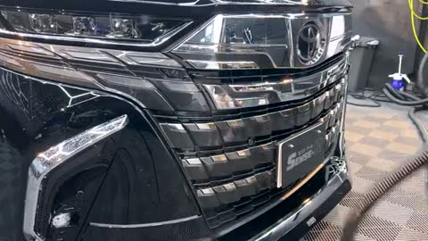
見本：センスR 8:32の絵（すぐ次の場面に変わるので、絵だけ）- 見本：センスR 0:19から1秒（画角だけを見る）
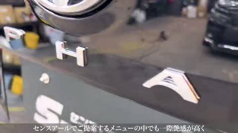
見本：センスR 0:22の絵（すぐ次の場面に変わるので、絵だけ）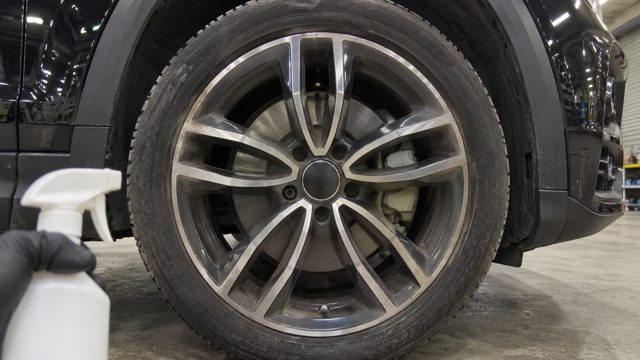
イメージ画像（Codexで作った絵です。本物の写真ではありません）。見本は高圧の水で洗っている所です。このカットは洗う前に撮るので、見本を外しました- 見本：センスR 0:54から2.1秒（画角だけを見る）
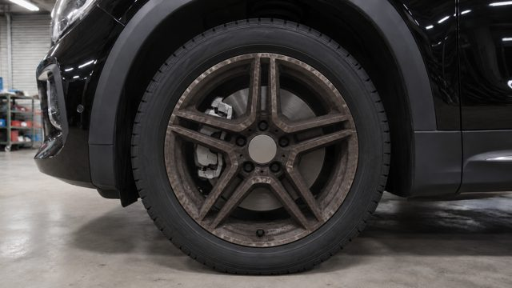
イメージ画像（Codexで作った絵です。本物の写真ではありません）。見本は、編集で洗う前と後を左右に並べた後の映像です。撮る時の画角ではないので、外しました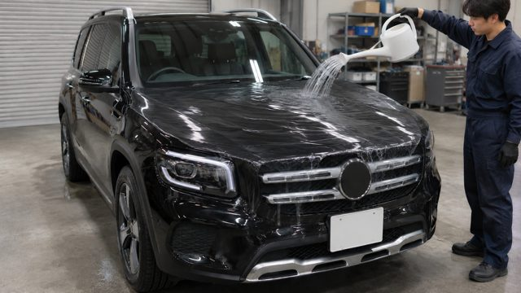
イメージ画像（Codexで作った絵です。本物の写真ではありません）。見本の2本に無い場面です- 見本：BUDDICA 0:55から1秒（画角だけを見る）
- 見本：BUDDICA 0:45から1秒（画角だけを見る）
工程1 洗車（1時間） 17本
工程表の順：ボディを高圧の水で流す → ホイール → 鉄粉 → ボディを洗う → エアーで水を飛ばす → 拭き上げ
- 見本：BUDDICA 2:34から1秒（画角だけを見る）
- 見本：BUDDICA 2:40から3.3秒（画角だけを見る）
- 見本：センスR 5:16から2.5秒（画角だけを見る）
- 見本：センスR 5:26から1秒（画角だけを見る）
- 見本：BUDDICA 1:55から1秒（画角だけを見る）
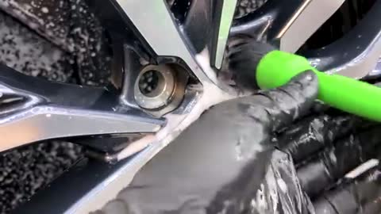
見本：センスR 1:42の絵（すぐ次の場面に変わるので、絵だけ）- 見本：BUDDICA 2:10から1秒（画角だけを見る）
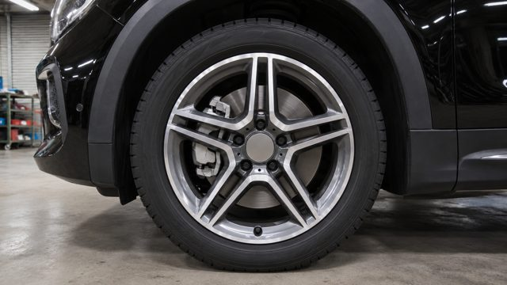
イメージ画像（Codexで作った絵です。本物の写真ではありません）。見本は、編集で洗う前と後を左右に並べた後の映像です。撮る時の画角ではないので、外しました- 見本：BUDDICA 3:54から2.4秒（画角だけを見る）
- 見本：BUDDICA 4:04から1秒（画角だけを見る）
- 見本：BUDDICA 3:25から1.1秒（画角だけを見る）
- 見本：センスR 6:30から4秒（画角だけを見る）
- 見本：BUDDICA 3:28から1秒（画角だけを見る）
- 見本：センスR 6:45から1秒（画角だけを見る）
- 見本：BUDDICA 3:43から1.8秒（画角だけを見る）
- 見本：センスR 7:06から1.5秒（画角だけを見る）
- 見本：センスR 7:15から1秒（画角だけを見る）
工程2 ボディチェック（30分） 4本
洗車の後、マスキングの前。
- 見本：BUDDICA 5:51から2.7秒（画角だけを見る）
- 見本：センスR 9:20から1秒（画角だけを見る）
- 見本：BUDDICA 1:02から2.9秒（画角だけを見る）
- 見本：BUDDICA 5:59から2秒（画角だけを見る）
工程3 マスキング（1時間） 4本
- 見本：BUDDICA 6:02から1秒（画角だけを見る）
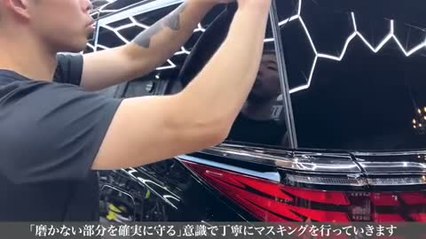
見本：センスR 9:05の絵（すぐ次の場面に変わるので、絵だけ）- 見本：センスR 9:14から1秒（画角だけを見る）
- 見本：センスR 9:02から1秒（画角だけを見る）
工程4 軽研磨（3時間） 15本
磨き始める前に撮る物が4本あります（バフ、液、磨く前の面）。
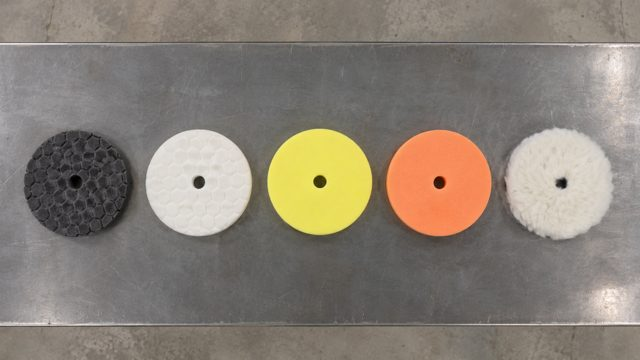
イメージ画像（Codexで作った絵です。本物の写真ではありません）。見本の2本に無い場面です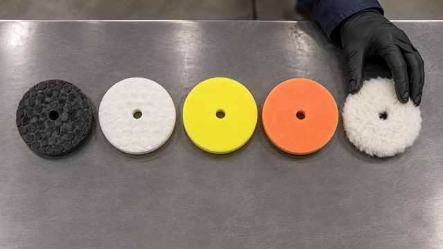
イメージ画像（Codexで作った絵です。本物の写真ではありません）。見本の2本に無い場面です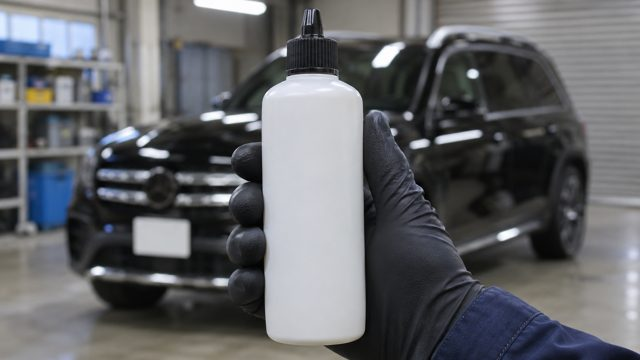
イメージ画像（Codexで作った絵です。本物の写真ではありません）。見本はセラミックコーティング剤の場面で、磨きの液ではありません。外しました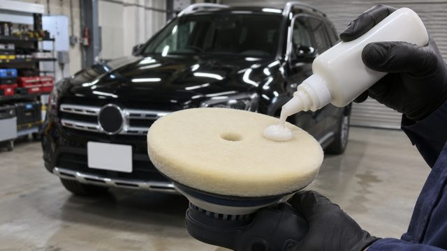
イメージ画像（Codexで作った絵です。本物の写真ではありません）。見本の2本に無い場面です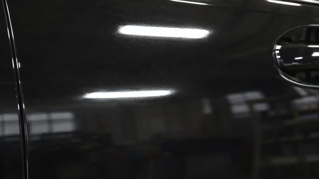
イメージ画像（Codexで作った絵です。本物の写真ではありません）。見本は、編集で磨く前と後を左右に並べた後の映像です。撮る時の画角ではないので、外しました- 見本：BUDDICA 6:29から1.6秒（画角だけを見る）
- 見本：BUDDICA 6:13から4秒（画角だけを見る）
- 見本：BUDDICA 8:12から4秒（画角だけを見る）
- 見本：BUDDICA 8:28から1秒（画角だけを見る）
- 見本：BUDDICA 7:32から1秒（画角だけを見る）
- 見本：センスR 9:33から1.9秒（画角だけを見る）
- 見本：BUDDICA 7:48から1秒（画角だけを見る）
- 見本：BUDDICA 7:40から4秒（画角だけを見る）
- 見本：BUDDICA 9:06から4秒（画角だけを見る）
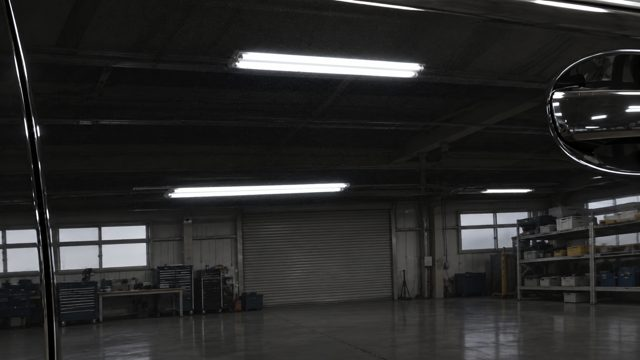
イメージ画像（Codexで作った絵です。本物の写真ではありません）。見本は、編集で磨く前と後を左右に並べた後の映像です。撮る時の画角ではないので、外しました
工程5 セラミック1層目（2時間） 11本
- 見本：センスR 10:05から2.6秒（画角だけを見る）
- 見本：BUDDICA 10:49から4秒（画角だけを見る）
- 見本：センスR 10:11から1.9秒（画角だけを見る）
- 見本：センスR 10:17から1.1秒（画角だけを見る）
- 見本：BUDDICA 11:07から1秒（画角だけを見る）
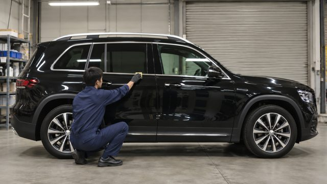
イメージ画像（Codexで作った絵です。本物の写真ではありません）。見本が19-Bと同じ場面の寄りの絵で、この文の画角（横からの引き、全身）と違うので、外しました- 見本：BUDDICA 11:21から1秒（画角だけを見る）
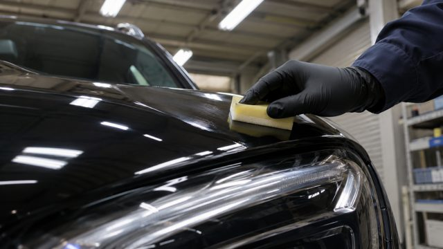
イメージ画像（Codexで作った絵です。本物の写真ではありません）。見本が18-Bと同じ場面で、この文の画角（ヘッドライトの近く）が映っていないので、外しました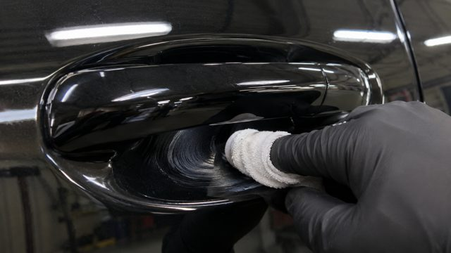
イメージ画像（Codexで作った絵です。本物の写真ではありません）。見本の2本に無い場面です- 見本：BUDDICA 11:45から2.5秒（画角だけを見る）
- 見本：BUDDICA 11:33から4秒（画角だけを見る）
工程6 硬化（6時間） 0本
工程表では「作業は特になし」の時間です。新しく撮るカットはありません。
工程7 セラミック2層目（2時間） 1本
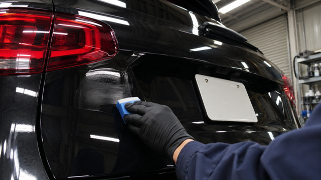
イメージ画像（Codexで作った絵です。本物の写真ではありません）。見本の2本に無い場面です
工程8 最終の仕上げ（2時間） 0本
新しく撮るカットはありません。24番（ライトでムラを見る）は、指示書では工程の名前の文字だけです。
完成した後 10本
26番は、施工前の01番と同じ位置で撮ります。
- 見本：センスR 12:23から1秒（画角だけを見る）
- 見本：BUDDICA 12:21から1.8秒（画角だけを見る）
- 見本：BUDDICA 12:33から1.2秒（画角だけを見る）
- 見本：BUDDICA 12:36から1秒（画角だけを見る）
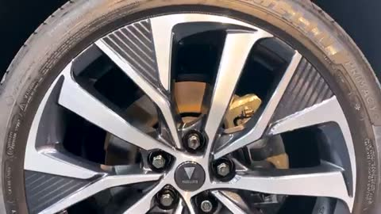
見本：センスR 12:20の絵（すぐ次の場面に変わるので、絵だけ）- 見本：BUDDICA 1:30から2秒（画角だけを見る）
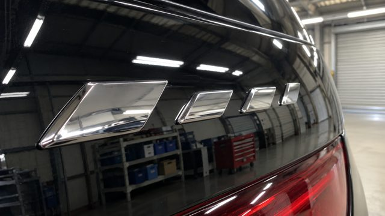
イメージ画像（Codexで作った絵です。本物の写真ではありません）。見本は、編集で施工前と後を左右に並べた後の映像です。撮る時の画角ではないので、外しました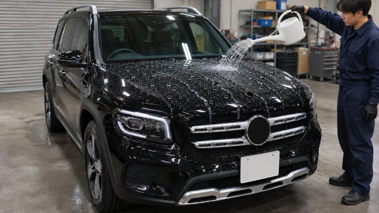
イメージ画像（Codexで作った絵です。本物の写真ではありません）。見本の2本に無い場面です- 見本：BUDDICA 13:30から1秒（画角だけを見る）
- 見本：BUDDICA 13:06から1秒（画角だけを見る）
引き渡しの日（撮れる場合） 3本
引き渡しの場所はまだ決まっていません。
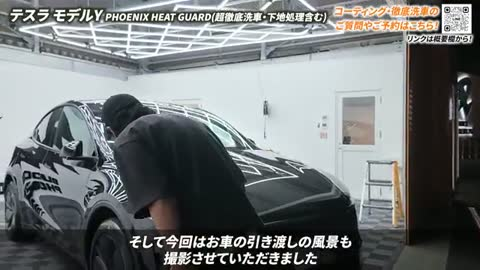
見本：BUDDICA 13:36の絵（すぐ次の場面に変わるので、絵だけ）- 見本：BUDDICA 13:46から1.4秒（画角だけを見る）
- 見本：BUDDICA 14:24から1.1秒（画角だけを見る）
施工の流れと別に撮る物（いつ撮るかはお店と決める） 3本
3番（ご依頼とメニュー）の場面で、GLBの施工の工程には入っていません。03-Aの注意に「別の日に撮るかを決める」とあります。
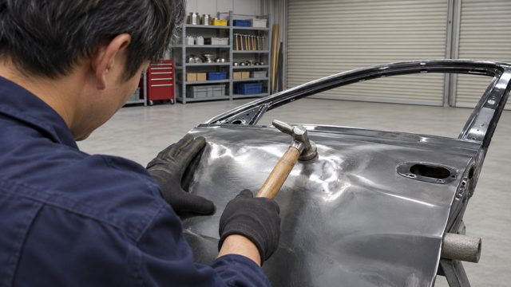
イメージ画像（Codexで作った絵です。本物の写真ではありません）。見本の2本に無い場面です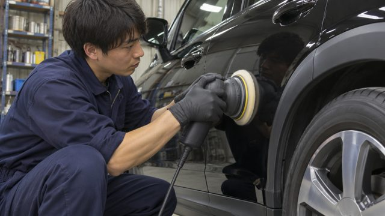
イメージ画像（Codexで作った絵です。本物の写真ではありません）。見本が15-D（肩越しに磨く所）と同じ場面で、この文の画角（横の低い位置）と違うので、外しました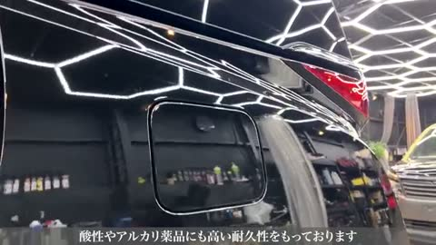
見本：センスR 0:31の絵（すぐ次の場面に変わるので、絵だけ）
撮らない物（編集で作る）
- 25-A：撮った短いカットを編集でつなぎ、表を載せる
- 5番：1番の映像に8工程の文字を載せる
- 21番：「6時間後」の文字だけ
- 23番：映す物が未定。新しく撮らずに洗車の映像を使うかを決める
- 24番：工程の名前の文字だけ
- 28番：保証の中身の文字だけ
- 31番：撮った映像に文字を載せる
用意する物
撮影の日に用意する物
撮るカット
編集で入れる物
人に頼むこと
四角を押すと済みの印が付きます。印はこのパソコンのこのブラウザにだけ残ります。上のボタンで工程を絞ると、その工程と全工程共通の物が出ます。
0〜9の外のメモ
決める順番
11/3に村田さんが、AIの企画と構成の案をダメとして「サムネ→タイトル→冒頭の順に一から決める」と話しました。この順番は今も未着手で、0番の下書きはその前の仮の物です
サムネ
車を真ん中、上下に文字。上は「車種名＋コーティングの種類」か「金額＋コーティング施工」。見本と同じだとパクリが気になるが、配置はどの会社も同じ。今は決めない
タイトル
これから決める。見本の【洗車】と「72時間徹底洗車」は、センスRのサービス名からの型。72時間はかけた作業の時間。英語の「car detailing」は「車をすみずみまで綺麗に仕上げる仕事」の意味で、海外の検索も取りに行っている見立て（理由は未確認）。センスRで再生が多いのは汚れた古い車で、新車は少なめ
概要欄
見本はリンクが多すぎる。センスRはコーティング剤や機材も売っているのでリンクが多い見立て（村田さん）。MIYABIはシンプルにして、迷わずリンクを押せるようにする。見本のハッシュタグは3つ（店名・徹底洗車・手洗い洗車）。洗車に興味がある人とコーティングの言葉の両方を取りに行っている見立て（村田さん）
チャンネル
アイコンとヘッダーはコーティング屋さんらしく。説明にMIYABIのキャッチコピーを1つ（マラハさんと考える）
ショート
本編の映像を組み合わせて、本編1本から3〜4本
テスラの案
11/2のメモは、テスラを使う前提でした。今回はGLBなので、「前にコーティング経験がある人に向ける」「第三者話法」だけを使いました。テスラで調べて分かったこと：伸びている日本語の施工動画はBUDDICAの1本だけ。「テスラ 塗装 弱い」は検索候補にあるが直近3か月の動画は無し。「前にコーティングした人がテスラを新車で買って施工」を合わせた動画も無し
中古車（フィット・カローラスポーツ）
今回の動画の対象外
見本動画のリスト（A・B）
参考の一覧なので、工程には入れていません